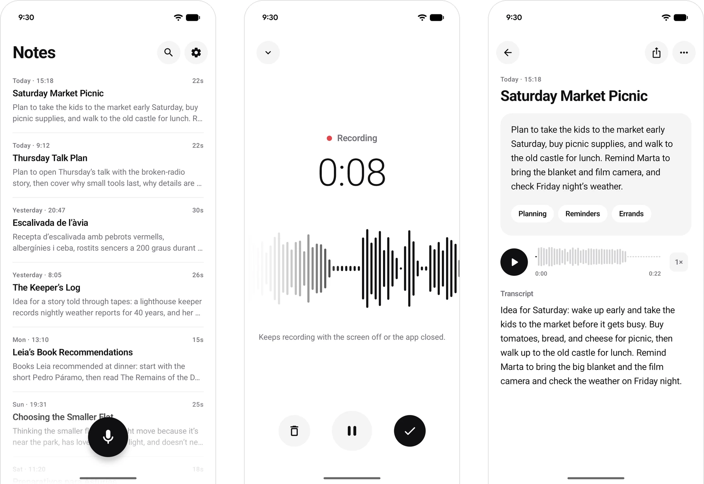
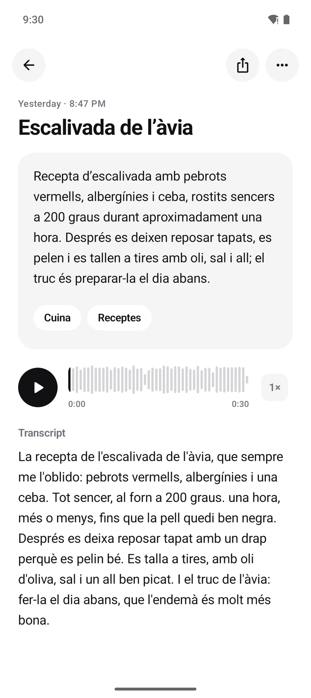
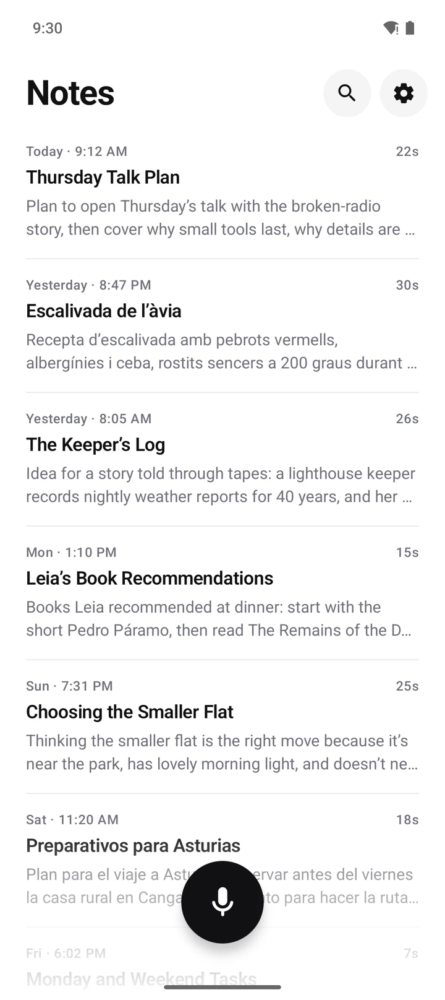
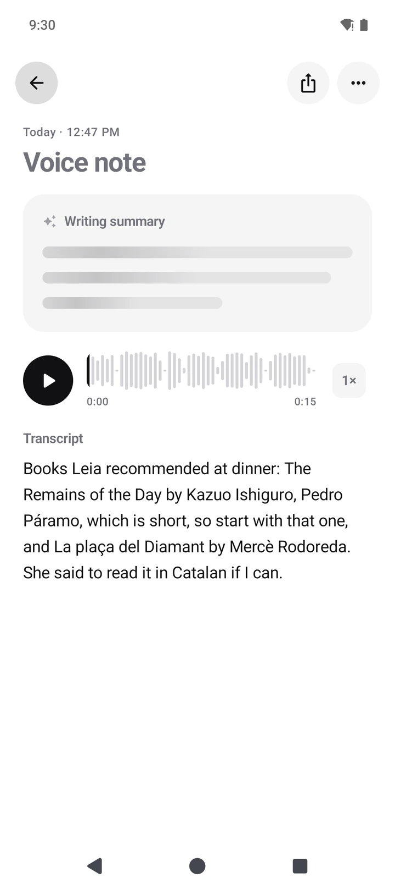
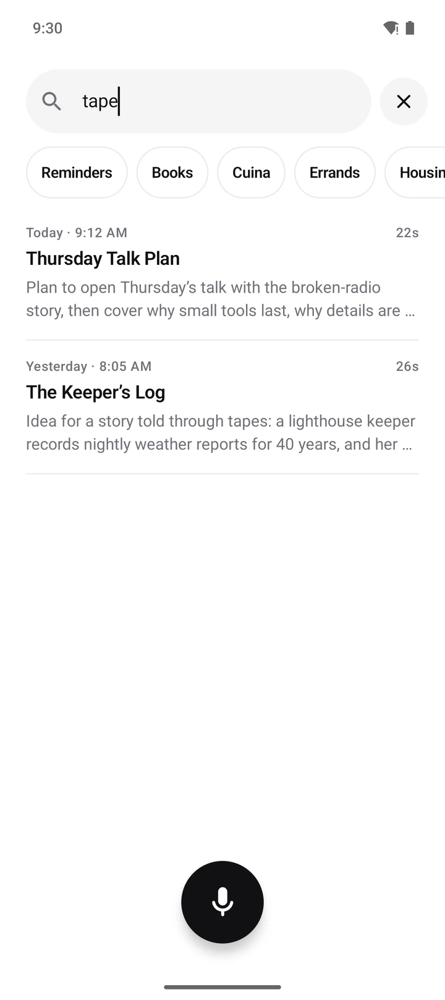
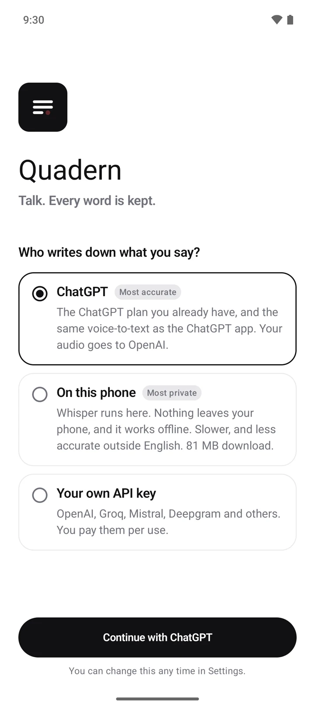
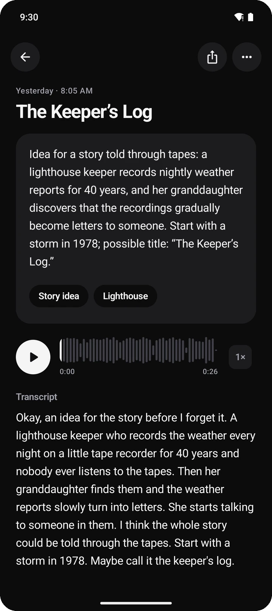

Think out loud.
A voice-notes app for Android. Tap once and talk; you get an exact transcript, a short title, a summary in plain words and a few tags. Transcribe with the ChatGPT plan you already have, or keep everything on your phone with Whisper, offline.
Quadern is Catalan for notebook: the small one you carry everywhere.

How it goes
One choice, then just talk.
Choose who listens
ChatGPT, for the best accuracy on the plan you already have. Or Whisper on your phone, so your voice never leaves it.
Talk
Screen off, phone in your pocket, twenty minutes if you like. Long notes are transcribed while you are still talking.
Read it back
A transcript, a title, a short summary and tags, in the language you spoke. Search finds any word.
Nothing gets lost
Built so nothing you say is lost.
A voice note is often something you can’t say twice. So most of the care in Quadern goes into one promise: once you’ve said it, it’s kept.
Saved as you speak
Audio goes to disk while you talk, in a format that stays playable even if it’s cut off mid-word.
Ready for the worst moment
If Android closes the app, the phone restarts or the battery dies, you keep everything up to the last few seconds, as a normal note.
Patient with the network
No signal? Notes wait and transcribe when it’s back. Long recordings go in pieces, so one bad connection never costs the whole note.
Never locked in
Your audio stays on your phone. If a service stops working, choose another and transcribe again.
We test each of these on real phones by closing the app, restarting the phone and pulling the power in the middle of a sentence.
Your language, as you speak it
For the way you actually talk.
Mix languages in one sentence if that is how you talk. Titles, summaries and tags come back in the language you spoke.
Word error rate on Softcatalà’s Catalan test, lower is better. It measured OpenAI’s public transcription model; OpenAI doesn’t say which model ChatGPT’s dictation uses.


The small things
Cared for, down to the small things.




Who listens
The most accurate, or the most private. You choose.
You pick the first time you open Quadern, and can change it any time. Rather nothing left your phone? Choose Whisper on your phone: it works offline, and your voice goes nowhere.
ChatGPT
The same voice-to-text as the ChatGPT app, through the plan you already pay for.
- Cost
- Included in your plan
- Languages
- Very accurate in many
- Audio goes to
- OpenAI
- Internet
- Needed
On your phone
Whisper runs on the phone itself. Pick a model from 44 MB to 574 MB; bigger is more accurate and slower.
- Cost
- Free
- Languages
- Best in English, weaker elsewhere
- Audio goes to
- Nowhere
- Internet
- Not needed
A service you choose
OpenAI, Groq, Mistral, Deepgram, ElevenLabs, Gemini, AssemblyAI, or your own server.
- Cost
- Pay per use
- Languages
- Depends on the service
- Audio goes to
- That service
- Internet
- Needed (or your own server)
ChatGPT’s dictation isn’t a public API, so it could change or stop. Quadern says so before you sign in, and if it stops, your notes stay on your phone: switch to another way and press “Transcribe again”.
Principles
Small on purpose.
Every word is kept.
Losing a recording is the one thing a voice-notes app must never do.
One job.
Record, transcribe, find. No chats, folders, templates, streaks or meeting bots.
Plain words.
Summaries are short prose in your language, not bullet points.
Quiet.
No badges, tips or notifications you didn’t ask for.
Yours.
Notes live on your phone. You choose who hears your audio.
Honest.
When something is unofficial, slow or limited, the app says so, and so does this page.
What Quadern won’t do: ask you to make an account, show ads, track you, sell you a subscription, or send your notes anywhere you didn’t choose.
Download
Free, for any Android phone from the last six years.
Quadern is in beta. It’s used every day, but it’s new: if something breaks or feels wrong, tell us on GitHub.
- Android 10 or newer, arm64.
- Updates arrive through Obtainium, or install a newer APK over the old one.
- Not on Google Play for now: Play doesn’t allow apps that use a service beyond its public terms.
- Every APK is built by GitHub Actions from the tagged source and signed with the same key.
- Check a download with
gh attestation verify quadern.apk -R aleixrodriala/quadern.
Questions
Asked before.
Does it cost anything?
No. With the ChatGPT option, transcription counts against your ChatGPT plan, the same as dictating in the ChatGPT app.
Can I use it without ChatGPT?
Yes. Choose “On this phone” and Whisper transcribes on the phone itself, offline; nothing leaves it. Or bring your own API key for OpenAI, Groq, Mistral and others.
Is it made by OpenAI?
No. Quadern is an independent project. ChatGPT is a trademark of OpenAI.
What if the ChatGPT route stops working?
Your notes and audio stay on your phone. Choose Whisper on your phone or an API key in Settings, then “Transcribe again”. If OpenAI ever asks, we can pause the ChatGPT route for everyone, and the app will tell you.
Where do my notes go?
Nowhere. They live on your phone. Audio goes only to the transcription service you chose; the transcript goes only to the service that writes summaries, which you can turn off.
How is it different from Voicenotes, AudioPen or Recorder?
Those are good apps. Voicenotes and AudioPen ask for their own account and a subscription of about $100 to $200 a year. Recorder only runs on Pixels, in fewer languages. Quadern needs no account, runs on any Android phone, and uses the transcription you already pay for.
Was it made with AI?
Much of the code was written with AI coding assistants. I decide what to build, review it, and test every release on real phones.